CRISP：面向边缘 MoE 的组合感知剪枝与调度协同设计
CRISP 讨论的是大模型在显存不足时怎样少搬运专家权重，并把保留下来的计算与加载合理交错。论文标题为 CRISP: Co-designing Pruning and Scheduling for Efficient MoE Inference on Edge Servers，作者 Congwei Zhang、Youming Tao 等，一作主机构为山东大学，合作机构包括柏林工业大学和香港城市大学；Congwei Zhang 与 Youming Tao 为共同贡献作者。论文于 2026 年 10 月 27 日公开，本笔记于 2026 年 10 月 30 日核验 arXiv:2610.37442。原文称实现约五千行 Python/CUDA 原型并计划公开源码，本轮未核验到本文独立代码仓库，不把引用文献的项目当作本文代码。
MoE 虽然每个 token 只激活少数专家，但输入相关的路由仍要求全部专家权重保持可访问；在内存受限的边缘平台，权重搬运往往比计算更慢。均匀剪枝与整专家删除没有考虑专家组合的使用频率，以及同一组合中专家贡献的不对称性。
1. 背景和问题
MoE 的稀疏性首先解决每个 token 的计算量问题，并没有自动解决模型总权重的存储问题。Mixtral-8x7B 具有约四百六十七亿参数，每个 token 仅激活约一百二十九亿参数；如果全部权重放不进 GPU，未被当前 token 使用的专家也不能简单丢弃，因为后续输入可能会路由到它们。常见方案是把专家保存在主机内存，路由结果出来后再传到 GPU。于是低激活参数量与低延迟之间出现了断层：减少乘加并不意味着能避免等待权重。对边缘设备，这种断层尤其明显，因为显存、内存带宽、能耗与响应预算同时受限，不能照搬多卡数据中心的常驻权重假设。
论文用单层分析把瓶颈具体化。Table 1 在 RTX 4090、PCIe 4.0 和四比特 Mixtral 的设置中，加载两个专家耗时 11.2 毫秒，占单层 14.4 毫秒的 78%；路由计算为 0.4 毫秒，专家计算为 2.6 毫秒，其他操作为 0.2 毫秒。这是特定单层测试的分解，不应与后面单专家微基准的 7.5 毫秒加载、0.8 毫秒计算直接拼成同一计时式。离散 GPU 上主要暴露主机到设备传输，统一内存平台则体现为共享带宽、缓存和内存互联竞争。两类平台的物理路径不同，但大专家权重的反复访问都可能成为等待来源。
既有调度方案通过缓存、预取与并行流减少等待，但可隐藏的搬运量受现成计算窗口约束。若一个专家只计算不到一毫秒，另一个专家需要几毫秒才能加载，重新安排先后顺序也不能消除所有传输。剪枝因此提供了另一条控制轴：直接减少需要读取和计算的中间神经元。问题在于，按专家统一缩到相同宽度，很可能把经常出现且重要的路径一起削弱；按专家永久删除又过于粗糙，因为一个专家在不同伙伴组合中的作用可能不同。CRISP 要回答的具体问题是：能否把“保留多少容量”与“怎样加载执行”作为一套设计，让剪枝产生的宽度差异能被调度器真正使用。
从历史工作分工看，缓存决定哪些专家能留在快内存，预取决定什么时候开始搬运，剪枝决定每次实际读取多少神经元；三个维度可以同时影响等待，但必须分别计量。CRISP 把宽度作为模型和系统的共同接口，因此不是简单地换一个更小的固定模型。相同专家在同一次部署中可以因伙伴组合不同而以全宽、半宽或不执行出现，这要求加载器、矩阵布局和内核共同配合。若实现只改路由权重或输出系数，没有真正减少被读取的矩阵切片，就无法获得论文强调的访存收益。另一方面，结构化截断会改变输出，质量控制必须跟着组合而不是只跟着模型参数总数走。这个问题设置把“为什么需要协同”限定得很清楚，也避免把任何压缩都统称为同一种加速。
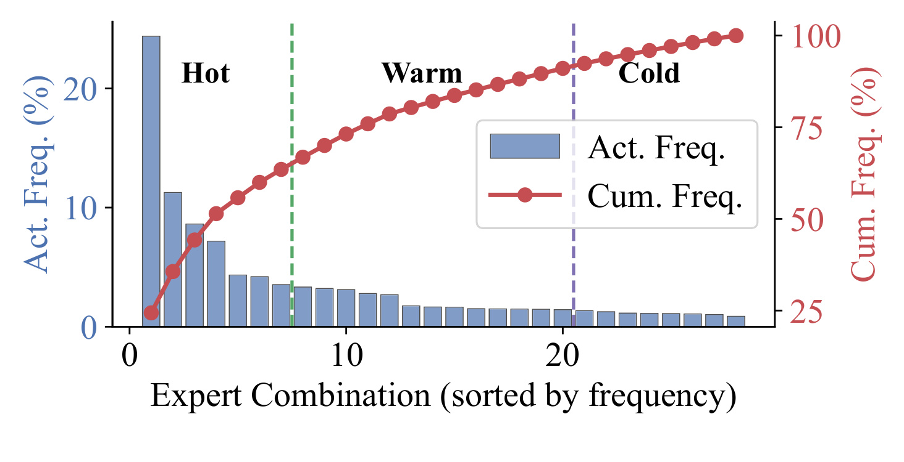
Figure 3 的横轴先按频率排序专家组合，蓝柱表示每个组合的激活比例，红线表示累计比例，左右纵轴含义不同。作者在 C4 验证集抽取的两千零四十八条序列上分析 Mixtral 的 top-2 路由：前约四分之一组合承担超过六成激活，尾部约百分之二十九组合合计不到一成。这让“所有组合都按同样比例削减”缺少依据，因为常用组合与罕用组合对平均质量的贡献不同。不过，图中 Hot、Warm、Cold 是组合频率分区，不是把某些专家永久分成三类，更不是用户或请求的价值等级。具体热门组合随层变化，图里的分布也不能证明业务上线后永远稳定；后文必须用跨域转移实验检查这些离线统计是否仍有效。这里能支持的是按组合分配容量的动机，不能直接推出冷门组合可以无代价舍弃，也不能用频率替代功能重要性。累计曲线把组合数与请求质量连接起来，但没有给每个组合在不同任务中的价值标签；这正是后面还要识别主辅角色的原因。
进一步看，组合出现次数仍不足以决定两个专家各保留多少宽度。路由权重可以表征本次输入的门控选择，但作者用“遮蔽某个专家后困惑度增加多少”衡量功能损失，以区分 dominant 与 auxiliary。主专家不是全模型固定身份，同一个专家与不同伙伴共同执行时可能承担不同功能。Figure 2 用 Expert 3 在不同组合被删除后的准确率差异说明这一点；本笔记保留更系统的遮蔽散点作为主要证据。对推荐排序中的条件子网络，这个区分也有启发：平均访问频率和当前组合中的边际贡献是两个量，不宜把高频模块默认视作在任何上下文中都最重要。
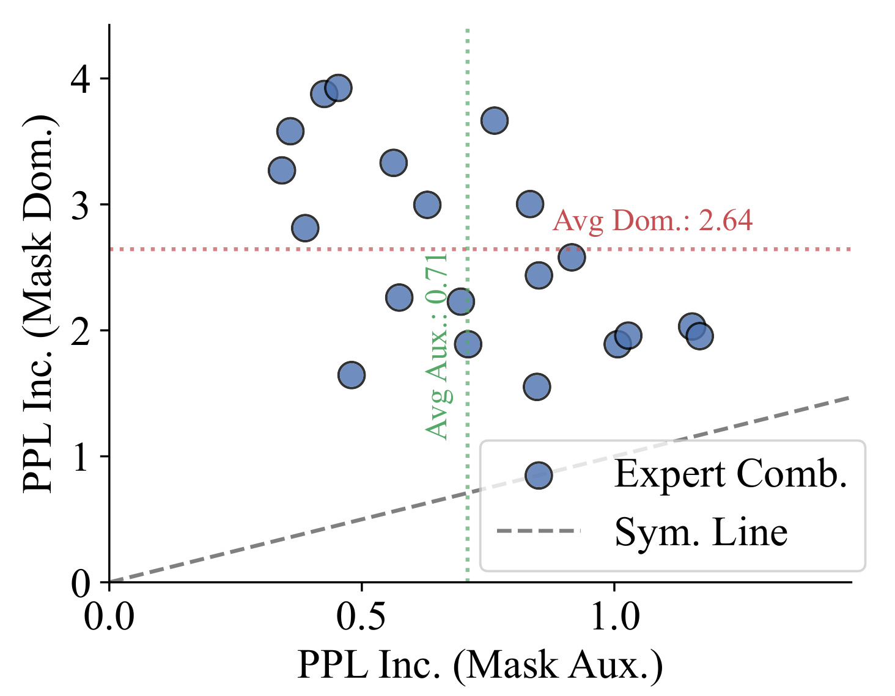
Figure 4 将每个组合画成一个点，横轴为遮蔽辅助专家的困惑度增量，纵轴为遮蔽主专家的困惑度增量；虚线表示两种删除影响相同。多数点位于对称线之上，作者报告平均主专家删除增量为 2.64，辅助专家为 0.71，约有三点七倍差异。这支持“同一组合内不平均分配容量”的设计，但并不意味着辅助专家没有作用：横轴仍有正增量，而且散点反映的是校准集及被检查组合上的平均损失。图中选择主专家的规则本身就依赖遮蔽后的较大损失，因此不能把点位于对称线之上当作独立的因果证明；真正需要验证的是，在相同搬运预算下，保留主专家全宽是否确实优于两者等宽。附录 Table 4 才提供更直接的等预算对照。实验也提醒读者，困惑度与具体任务准确率并非同一个指标，不能在解释中互相替换。图中的均值差距为容量非对称提供经验依据，并未回答不同硬件条件下最佳宽度应是多少；实际执行仍需用质量和访问成本共同选择。
这一问题与大模型服务直接相关，也与推荐基础模型中的稀疏专家、场景专家和内容理解模型相关，但适用前提需要保留。论文研究的是已经给定权重的推理系统，并不提出新的推荐目标或用户偏好学习算法；对推荐链路的迁移只是工程假设。只有当服务确实受专家权重访问限制、允许离线校准、并能容忍受控质量损失时，组合感知执行才值得进入评估。若专家全在高带宽显存中，或请求以大批量矩阵计算为主，主要瓶颈可能改变。把“稀疏模型很大”直接等同于“这套剪枝必然提速”，会跳过论文最关键的硬件与负载条件。
2. 方法
2.1 重要性感知神经元重排
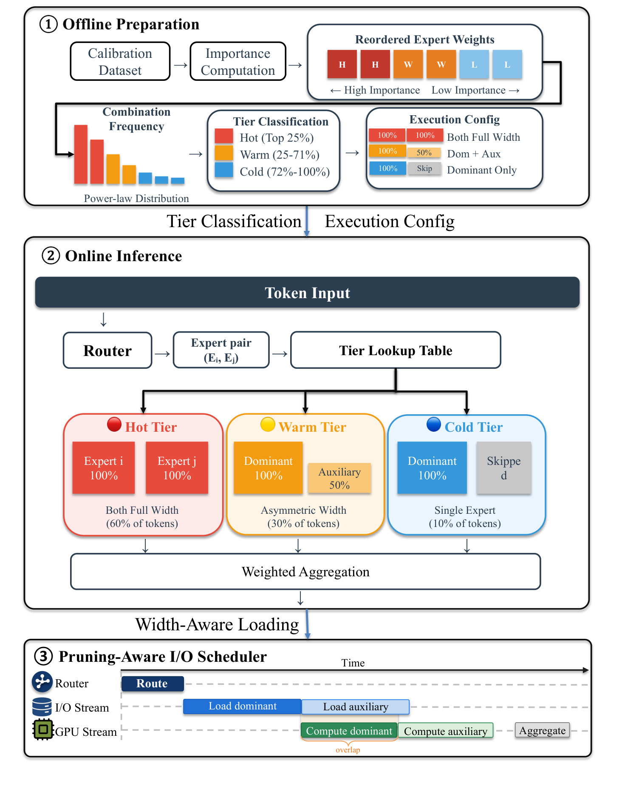
Figure 6 把设计连成一条可执行的信息流：离线输入是模型与校准数据，输出是重排后的专家权重、组合层级与主辅身份；在线输入是当前层路由结果，查表得到各专家应执行的宽度，再交给加载与计算流。图中红、黄、蓝三类执行块对应两专家全宽、主专家全宽配辅助半宽、仅主专家，底部时序展示在主专家计算窗口内加载辅助专家。它并没有画出一个提前知道未来路由的预测器，当前层路由结果没有出来前不能把下一层专家当成确定任务。顶部的三种输出也不是互相替代：只有权重重排而没有组合策略，并不知道该截断多少；只有组合策略而存多份裁剪权重，又会增加存储；只有调度器则不能创造更小的待传输对象。因此，图里的接口关系比“同时用了剪枝和调度”更具体：重排暴露宽度，策略选择宽度，调度消费宽度差异。后续的质量与调度消融分别检验这些接口是否带来独立价值。需要特别注意，离线对权重进行置换不等于训练模型得到新能力，在线减少的也是被选专家的中间宽度，并未把原路由器替换为一个学习到的硬件调度器。图中百分之六十、三十、十标注是 token 激活质量，专家身份不由颜色永久固定；模型更新或业务分布变化时，顶部生成的元数据与顺序可能必须重新准备。保留这些接口条件，才能判断方法能否移植到不同运行时。每个模块输出都应可被单独记录：排序索引用于复查全宽等价性，组合查表用于解释请求采用哪种近似，流时间线则用于验证加载是否真正被覆盖。
标准 gated FFN 包括 gate、up 和 down 三个投影，原文式一为：
符号解释：$x$ 是输入隐状态，$W_{\mathrm{gate}}$ 和 $W_{\mathrm{up}}$ 将隐藏维投到中间神经元维度，$W_{\mathrm{down}}$ 再投回隐藏维，$\sigma$ 为激活函数，$\odot$ 是逐元素乘法。一次结构化裁剪必须成套保留两个上投影的相应列及下投影的相应行，否则不再是同一组中间神经元。CRISP 采用校准激活幅值估计重要性：
符号解释：$\mathcal D$ 是校准输入集合，$i$ 为中间神经元索引，$s_i$ 是门控后激活乘积的平均绝对值。这个量同时反映 gate 与 up 通道的响应，但没有显式乘上下投影的行范数，也不是删除该神经元后的精确任务损失。作者以它作为低成本排序准则；“最高分的前若干个神经元”只是在此准则下的最优子集，不能据此宣称得到端到端质量的全局最优剪枝。排序得到置换后，三个矩阵按一致索引重排：
符号解释：$\pi$ 是按 $s_i$ 降序排列的索引序列，冒号表示保留另一维，波浪号表示重排后矩阵。全宽执行时一致置换保持 FFN 函数不变；真正改变函数的是截断到前 $k$ 个神经元。每个专家只保存一份权重，运行时读取相同前缀即可选择不同宽度，不必为全宽、半宽各存一份模型。实现还需要宽度感知的 strided copy 和专用 CUDA 内核，把少读权重转化为少传数据、少做计算，不能先把完整专家加载上卡再仅屏蔽后半部分。
2.2 按组合热度分层执行
离线统计对每层的组合按访问频率排序，以累计激活质量的阈值划 Hot、Warm、Cold。主文固定 $\alpha=0.6$、$\beta=0.9$：Hot 承担累计前六成激活，Warm 承担其后的三成，Cold 处理最后一成。这里阈值约束的是 token 的激活质量，而非“百分之六十专家属于 Hot”。主文得到约百分之二十五、四十六、二十九的组合数量比例；附录却给出另一组组合比例，后文保留该口径冲突，不强行解释成相同实验。主辅身份则按下式评估：
符号解释：$e_i$ 为组合中的一个专家，mask 表示将其输出替换为零，PPL 为校准序列困惑度，$\Delta_i$ 越大表示删除代价越高。比较同一组合两个专家的增量，较大者作为主专家。这一步需要离线消融，在线只查表，并不对每个 token 再做一次两模型比较。策略把组合与主辅身份共同映射为宽度：Hot 两者全宽，Warm 主专家全宽且辅助保留一半，Cold 跳过辅助。其输出不改变当前层路由选择，而是改变被选专家实际执行的容量。
符号解释：$p_H,p_W,p_C$ 分别是三层级承担的 token 比例，$M_{\mathrm{full}}$ 与 $M_{\mathrm{narrow}}$ 是全宽、窄宽专家一次访问量。用主文的 $0.6/0.3/0.1$ 及半宽代入，得到 $1.75M_{\mathrm{full}}$，相对双全宽 $2M_{\mathrm{full}}$ 减少百分之十二点五，论文近似写为百分之十三。它描述平均一次路由需要访问的专家权重，不等于模型总参数减少，也不等于显存缓存预算，更无法直接解释 Figure 13 的百分之四十二 I/O。后者缺少足够口径说明，不能把两处数字并成一条节省率论证。
2.3 剪枝感知的 I/O 调度
路由返回后，待加载专家进入 pending 队列，已完成加载的专家进入 ready 队列。系统分别使用 I/O 流与计算流，在可执行专家中优先选择较宽者，利用较长计算窗口部分覆盖后续专家加载。所有当前层专家完成并聚合输出后，才能进入下一层路由；这保证因果依赖，没有通过跨层预知规避等待。对 Warm 组合，先加载并计算主专家、并行加载半宽辅助，是最直观的执行顺序。要完全隐藏辅助加载，必须满足：
符号解释：$w_d,w_a$ 分别是主、辅执行宽度，$T_{\mathrm{comp}}$ 为计算耗时，$T_{\mathrm{io}}$ 为加载耗时。论文微基准给出全宽专家计算约零点八毫秒，半宽专家加载约三点八毫秒，显然不满足完全覆盖条件。因此，图中重叠箭头应读作“减少暴露等待”，不能理解成让辅助权重全部免费到位。批处理时，其他已完成路由的请求可以提供更多 ready 与 pending 工作，但这也意味着实际收益与并发度、缓存命中、流同步和内核效率有关。这里没有训练新的调度神经网络；校准、重排和身份识别在离线进行，推理只是查表、部分权重加载和顺序协调。
实现细节对可迁移性有约束。原型基于 PyTorch 和定制 CUDA，支持分宽读取、窄专家计算与显式流同步。主文的算法、组合索引和主辅规则主要按 top-2 描述，但评测包含 top-6 的 DeepSeek-MoE。把“组合中保留主专家、削减辅助”推广到六专家时，究竟逐对组合、选单主专家还是对其余专家各分配宽度，当前公开描述不够完整；这是复现必须追问的部分，不能自行补实现。同时，模型权重更新后重要性和置换可能需要重算，负载转移后热度及主辅映射可能需要刷新。离线工件可复用的前提是所服务的模型与负载仍与校准条件相近。
3. 实验结果
3.1 质量保持与等内存比较
作者在 Mixtral-8x7B 和 DeepSeek-MoE-16B 上评估，后者为约一百六十四亿总参数、每 token 约二十八亿激活参数且使用 top-6 路由。硬件包括二十四 GB 显存的 RTX 4090 加六十四 GB 主机内存，以及三十二 GB 统一内存的 Jetson AGX Orin；通过限制专家缓存可用预算制造受限场景。质量评估使用 WikiText-103、C4 困惑度及 MMLU、HellaSwag、ARC-Challenge、WinoGrande 的零样本准确率，吞吐使用 ShareGPT 输入序列。比较对象包括完整卸载、均匀剪枝、MoE-Offload 和 EdgeMoE，不同图中的对手集合与预算并不完全相同。
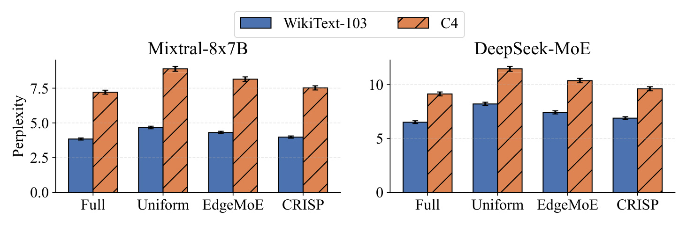
Figure 7 的两组面板分别是 Mixtral 与 DeepSeek，纵轴越低越好，蓝色和橙色分别对应 WikiText 与 C4。Mixtral 的 WikiText 困惑度从完整执行的 3.84 变为 CRISP 的 3.98，按展示值计算约增加百分之三点六五；均匀剪枝为 4.67，约增加百分之二十一点六。DeepSeek 对应的 CRISP 困惑度为 6.89，低于均匀剪枝的 8.21。这支持组合感知容量分配比同样粗糙的均匀处理更能保持语言建模质量，但不能把困惑度增加写成准确率降低了同样百分比，更不能说只损失了三点六个百分点。论文摘要使用“accuracy loss 3.6%”的概括，而能由正文精确复核的是这组 PPL 比值；本笔记优先保留后者。柱图还表明 CRISP 并未完全恢复完整模型，其收益是在允许一定质量变化的前提下换取访问开销降低，而不是无损结构变换。这里不应把整数位接近理解成统计无差异，原图没有为这些困惑度柱提供多随机种子置信区间；准确率图与语言建模图也需要分别解释。正文另称平均保留原准确率的百分之九十七点四，只能作为作者跨任务汇总读数，不能拿它与此图的困惑度百分比互算。对于质量门槛很严的实际系统，需要先规定允许退化的是哪个指标、在哪种任务分布上度量，再判断这组折中是否能够接受。若把困惑度视作语料平均下一词预测难度，它可能掩盖少数样本上的大退化；若任务采用选项准确率，则分数还依赖提示模板和选项解析。二者都不能直接代替工具调用成功率，也不能由少量标准基准推定开放式对话完全不受影响。当前图的价值是展示受控质量损失，而不是证明对所有语义任务都等价。
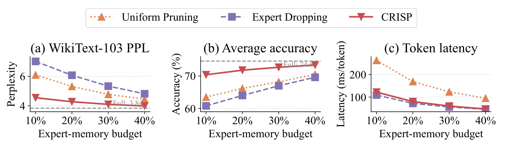
Figure 9 把横轴统一成百分之十到四十的专家内存预算，在三个子图分别给出困惑度、平均准确率和 token 延迟。百分之四十预算下，CRISP 的平均准确率为 73.4%，均匀剪枝为 70.5%，专家删除为 69.6%；CRISP 相对两者分别高二点九和三点八个百分点。它的 47 毫秒每 token 与专家删除的 46 毫秒接近，并明显低于均匀剪枝的 95 毫秒。这个对照说明，有价值的结果不只是延迟更低，而是在相近延迟和相同预算下保留了更多质量。另一方面，虚线给出的完整模型平均准确率是 74.6%，所以 CRISP 仍有一点二个百分点缺口，不能用相对基线的进步覆盖这一退化。这里的平均准确率也不同于主文另一处“平均保留 97.4% 原准确率”的比例；后者未提供足够逐任务权重，不能反推出相同聚合分母。比较应始终沿着本图共同预算与共同指标进行。三个面板还共同说明专家删除可以接近最低延迟，却未必处于理想质量位置；单看速度曲线会错过这一点。预算增加时三种方法的质量普遍恢复，意味着优势依赖内存压力而不是一个与资源无关的固定模型常数。对于复现，至少需要固定权重量化精度、可缓存专家总量的定义和输入序列，不能用更多常驻权重的结果去对比更小预算的基线。这种三指标联合比较还保留了一个可操作判断：当系统对单步延迟极敏感时，专家删除可能有其价值；当允许相近时间但更重视质量，组合分层的优势更清楚。选择依赖约束，不应仅给所有方法按一个最高吞吐排名。图中未展示完整预算下质量与速度收敛情况，该范围之外仍需重新测量。
3.2 吞吐、能耗与系统成本
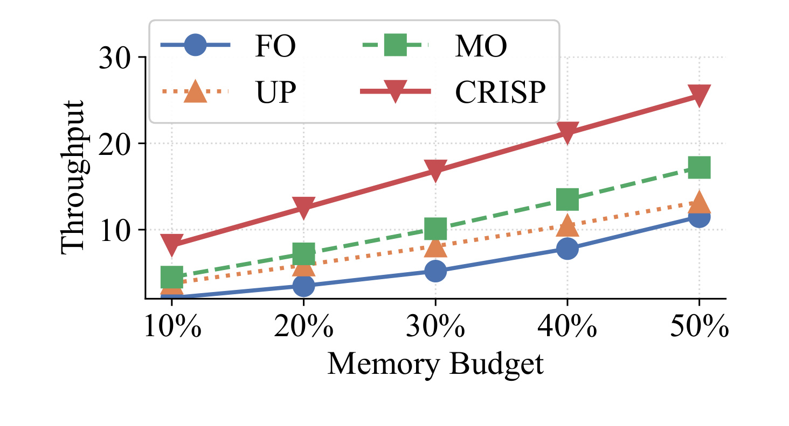
Figure 10 的四条曲线比较完整卸载 FO、均匀剪枝 UP、MoE-Offload 与 CRISP，横轴是可缓存专家内存占专家总大小的比例，纵轴为生成吞吐。在百分之十预算处，正文报告 CRISP 为每秒 8.3 个 token，完整卸载为 2.1，MoE-Offload 为 3.9，因此约三点九倍与约二点一倍分别对应不同基线。到百分之三十预算，CRISP 为 14.7，MoE-Offload 为 8.6，比例约一点七；百分之五十预算的相对优势进一步收窄到约一点四。趋势符合瓶颈解释：缓存越充裕，必须临时搬运的权重越少，剪枝和调度可以减少的暴露等待也越少。这不是对所有显存配置都保证二倍提升的证据，更不能由曲线推出模型完全常驻时同样收益。吞吐增益来自整套容量策略与执行优化，若只在另一引擎复刻神经元排序而不实现分宽加载和并行流，不能直接引用这条曲线作为预期性能。曲线中的绝对吞吐还受模型、量化方式和并发请求数影响，而论文不能替业务环境决定可接受的响应时间。移植时应先测专家加载占总时间的比例，再分别打开容量策略和宽度调度，确认二者减少的确实是暴露传输，而不是来自不同批大小或输入长度。该图没有测量用户等待队列，因此每秒更多 token 也不必然意味着所有请求的尾延迟按相同比例缩短。尤其是较宽专家优先可能改变不同请求的等待顺序，平均吞吐提升并未直接给出公平性或最坏等待时间界。论文没有把调度选择形式化为全局最优问题，因此“优先宽专家”应被理解为得到实验支持的启发式，而不是在任意排队和缓存状态下都最优的定理。
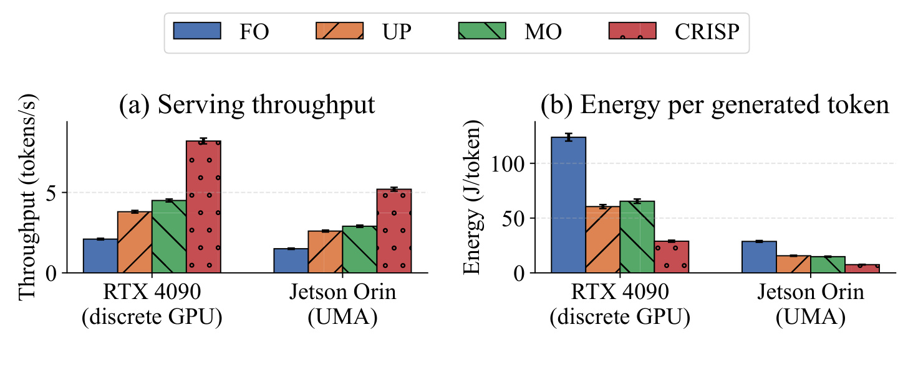
Figure 11 将同一百分之十专家预算下的两个平台并列，左侧是每秒 token，右侧是每生成 token 的焦耳数，图中的误差条为百分之九十五置信区间。CRISP 在 RTX 4090 和 Jetson Orin 上分别达到 8.2 与 5.2 token 每秒，每 token 能耗分别为 28.9 和 7.5 焦耳；相对完整卸载能耗分别下降百分之七十六点七和七十三点九。这里的 8.2 与 Figure 10 文中 8.3 应按各自实验读数保留，不把小差异强行归因。两个平台的路径也不同：离散 GPU 主要减少显式 PCIe 搬运，统一内存则减少共享带宽、缓存和互联竞争。它支持优化理念不只限于主机设备拷贝，但没有证明其绝对能耗可以跨平台公平比较，因为硬件功耗、算力、运行时间和测量边界都不同。部署决策还应补首 token 延迟、尾延迟和长时热稳定性，这些并没有由平均每 token 指标充分覆盖。论文的方法是积分平台功率遥测再除以生成 token 数，因而是每次生成运行的能耗结果；读者不能把它改写成所有边缘硬件的设备功耗降低比例。原图给置信区间是积极信息，但未展示跨温度、不同后台负载或电源模式的重复性，因此外推到移动终端仍需目标设备复测。对于共享内存系统，减少访问还可能改变其他进程可用带宽，但本文没有同时运行前台应用的实验，不能宣称一定改善整机交互体验。这里真正跨平台保留下来的是减少大专家权重访问这一机制；具体效能取决于设备的内存拓扑与运行模式。应分别测量设备静态功耗和生成时能耗，保证跨方案使用相同遥测范围，否则能耗下降比例还可能受计量边界影响。
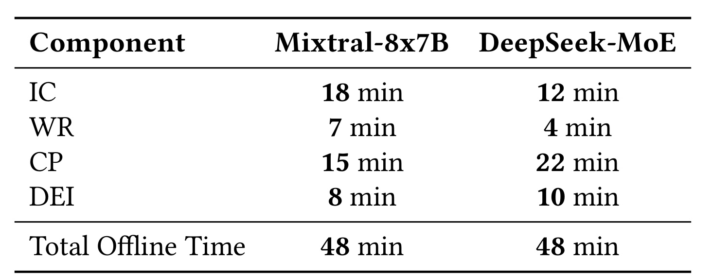
Table 2 按重要性计算、权重重排、组合统计和主专家识别四步分解成本，两种模型总计均为四十八分钟。Mixtral 分别耗时十八、七、十五和八分钟；DeepSeek 为十二、四、二十二和十分钟。成本结构说明不训练额外大模型不等于没有准备成本，尤其是组合统计与主辅消融仍占显著时间。重排不增加权重参数，附加元数据小于二 MB，但这与离线运行时间是两种成本，不能合并成“几乎免费”。正文将校准序列写为两千零四十八条，附录在重要性计算段却写一千零二十四条，原文没有清楚说明是否为不同阶段采样，故该点标为口径未统一。附录还报告调度每 token 开销为四十八点一和四十三点九微秒，分别占总延迟约百分之零点零五和零点零六。这些微基准解释在线查表成本较小，但模型或业务分布频繁变化时，仍须计入重新校准与重排的周期成本。对频繁发版的线上服务，离线四十八分钟是否可接受取决于准备能否并行到更新流程中；论文给出的是一次准备测试，不能据此假设所有模型大小的准备时间都近似不变。
3.3 各组件的增益来自哪里
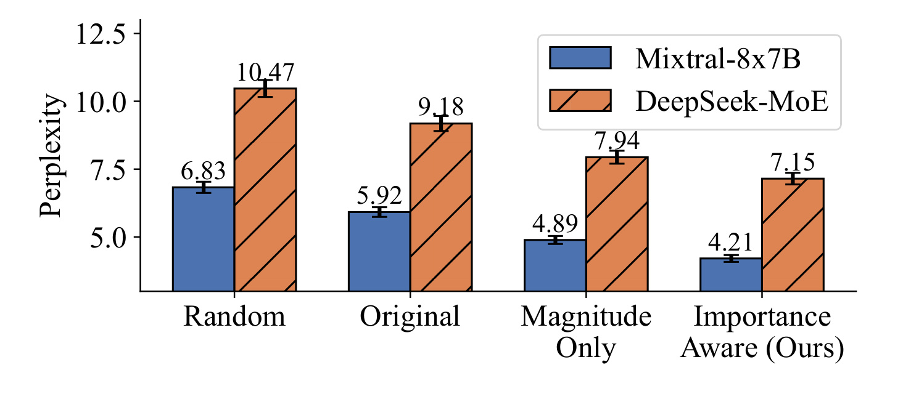
Figure 12 固定百分之五十剪枝，比较随机顺序、原顺序、仅权重幅值和激活重要性排序；两种模型都在同一组规则下保留前半神经元。Mixtral 的困惑度分别为 6.83、5.92、4.89、4.21，DeepSeek 为 10.47、9.18、7.94、7.15。固定宽度以后，重要性感知重排仍优于其他排序，因而说明收益不全来自选择了更宽的专家，也说明直接截取原始前缀会损失更多质量。这个实验更准确地检验“前缀保留是否把有用神经元放在前面”，而非证明神经元重排本身改变全宽模型能力；一致重排的全宽输出本来应保持不变。还要区分本文重要性式只使用门控后激活幅值，与某些剪枝方法将输出权重、梯度或二阶信息纳入的准则不同。图中没有覆盖所有可能的剪枝评分，所以可以说优于所列规则，不能宣称激活幅值就是所有负载下的最优裁剪指标。百分之五十是这个控制实验的共同条件，图中重要性排序的 4.21 与全分层执行的 3.98 并非同一个模型运行方式：后者让 Hot 保持全宽、Warm 使用不对称宽度。若把二者相减当作单纯再排序收益，就会混入策略改变。评价结构化剪枝时要同时写清顺序准则、实际保留宽度及执行策略，不能只写模型名称。随机排序与原始排序的差距也说明原权重排列本身没有为前缀截断优化，不能把原始前半神经元当作自然小模型。重要性排序在两个骨干上方向一致，但仍只评估半宽一点；如果实际要提供更多宽度档位，需分别量化它们的质量曲线和内核占用率，而不由这个单点外推线性收益。
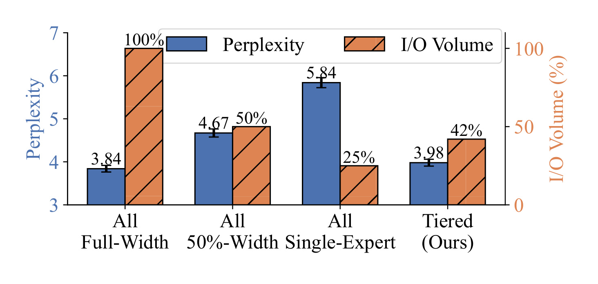
Figure 13 的蓝柱给困惑度，橙柱给归一化 I/O，四组分别是全宽、统一半宽、统一单专家和分层策略。全宽为 3.84，统一半宽为 4.67，统一单专家为 5.84，分层为 3.98，定性上与“把容量留给高频和主导路径”一致。不过这张图存在必须保留的口径问题：图注提及吞吐，实际纵轴与图例却写 I/O Volume；橙柱将分层标成 42%，单专家为 25%，与式四按主文激活比例推导的分层平均访问量 87.5%并不一致，也不符合仅删双专家之一的直观百分之五十访问量。公开正文未把缓存、总读取、静态存储或其他归一化分母解释清楚，因此这里的 42% 应标为数据口径未验证，不用作确定节省比例，更不把它当作与式四相互验证的证据。可靠保留的是同图质量排序以及作者意在比较质量和访问量的权衡，精确预算还需要原始实验或代码澄清。这个问题不需要替作者编造缓存命中率来消解，因为不同解释都会引入正文没有给出的假设。工程读者可以先使用有清楚分母的等 I/O 对照与同预算吞吐判断机制价值，再把该图列入复现问题清单。它也说明仅审查摘要和最佳倍数不够，图例、轴标签、公式与主文解释必须共同核对，才能发现一个看似漂亮但口径尚未统一的成本结果。验证时应分别记录主机读取字节、设备常驻字节与每次路由使用字节，再各自对照完整执行；三者不能混用。公开材料缺少原始计数，因此无法只凭这张图确认差异来自缓存还是其他分母。该缺口应进入复现问题清单，而不应由读者补造一个未提供的解释。
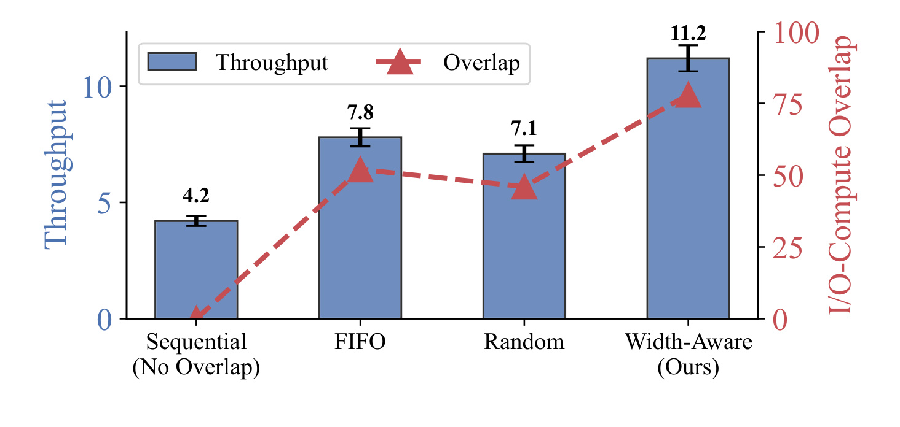
Figure 14 固定 Mixtral 百分之二十内存预算，在相同专家执行框架内比较顺序、先进先出、随机和宽度感知调度。吞吐分别为 4.2、7.8、7.1、11.2 token 每秒，宽度感知相对先进先出约提高百分之四十三点六；红线表示 I/O 与计算重叠程度，呈现相应上升。它给出了比跨论文系统比较更集中的调度证据，因为有了剪枝宽度后，不同排序仍然影响能隐藏多少传输。但红线的重叠率不是“全部传输已经免费”，也不是所有层或所有请求的等待时间都降到零。顺序基线明显较弱，若只把十一点二除以四点二报约二点七倍，会混合基本并行与宽度优先两种收益；解释新增调度机制时，先进先出的七点八是更有信息的对照。图的百分之二十设置也不能直接与 Figure 10 百分之十的每秒八点三比较成另一种提升，缓存预算和工作负载条件必须同时保持。算法还必须等待专家权重就绪才能计算，不能从较高的重叠率推出它允许绕过数据依赖。若目标框架已有跨请求调度或更好的并行加载，先进先出基线与新增排序的剩余空间可能不同，因此实际集成应在当前运行时测量，论文中的比例不能作为固定服务级承诺。从计算窗口条件看，宽度优先的直接作用是较早释放可覆盖时间，不会改变下一层路由依赖；若 ready 队列经常为空，排序选择也没有足够候选发挥作用。这让并发和请求构成成为必要实验变量。本文图示证明所测条件下有效，但尚未穷举这些运行状态，也没有给出最坏排队时间界。
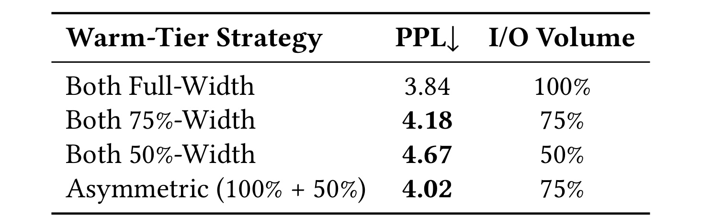
Table 4 是主辅非对称假设最直接的控制实验。两专家全宽困惑度为 3.84、I/O 为百分之一百；两者各保留四分之三宽度为 4.18、I/O 为百分之七十五；主专家全宽加辅助半宽同样是百分之七十五 I/O，却得到更低的 4.02。两者都半宽的困惑度为 4.67、I/O 为百分之五十。相同访问预算下非对称方案优于对称方案，补上了动机散点无法单独完成的验证：不只是删除某个专家损失较大，按该身份重新分配宽度也确有帮助。但这个结果只覆盖被测试的 Warm 组合与模型条件，不代表任何组合都应采用同一全宽加半宽规则；若重要性分布、专家数量或路由方式变了，宽度比例可能需要重新搜索。它还说明质量和成本之间没有无损免费点，非对称执行依然不及双全宽的原始困惑度，作者优化的是在约束下的折中。这里的 I/O 百分比有明确的双全宽分母，因此比 Figure 13 的归一化更容易复核；两者应保持各自语境。若把整个系统的吞吐变化全部归因给这个表，也会遗漏缓存命中与并行调度。正确的因果粒度是：在这组匹配访问量的实验里，选择保留哪一部分容量会影响质量，而不是只有总访问字节数决定结果。对称四分之三宽和非对称全宽加半宽拥有相同总中间维规模，因此比较相对干净，仍应检查两种宽度对应的内核实现是否一致高效。表中报告的是语言模型困惑度而不是延迟，不能由其质量优势直接推算不对称策略快多少；速度证据需要回到调度与吞吐实验，并固定相同的测量边界。
3.4 冷门组合与负载变化的边界
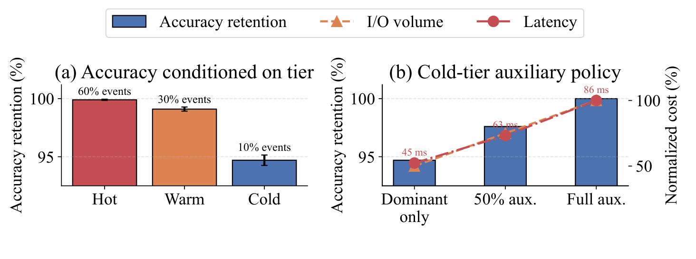
Figure 15 左图把平均质量拆到路由层级：Hot 与 Warm 保留完整执行准确率的 99.9%和 99.1%，Cold 则仅保留 94.7%。这些是准确率保留比例，不是准确率本身，也不能直接当作三组相差若干百分点。Cold 仅承担约一成激活，因此其更明显的退化容易被整体平均掩盖。右图进一步让 Cold 从双专家全宽逐步减到主专家独执行，I/O 约减少一半，延迟从八十六毫秒降到四十五毫秒，但质量保留也从百分之一百降到九十四点七；辅助半宽提供中间点。它清楚说明，论文不是在所有条件下无损，而是在长尾路由上付出更大质量代价。若罕见领域、少数语言或特殊工具调用更容易落在这些组合，平均吞吐不足以决定策略是否可用。业务迁移至少应加入按任务或用户切片的失败率，不能仅凭冷组合访问次数少就推定其后果不重要。原论文没有给出这类用户切片，因此这一风险仍待额外实验。右图也给出实际的策略退路：若 Cold 的质量门槛不满足，可以保留一部分辅助容量，而非只能在完整方案和彻底关闭之间选择。但更保守的容量会降低原来的节省，需要重测整体预算；不能既引用主专家独执行的低延迟，又同时使用双专家全宽的质量数字来描述同一个配置。
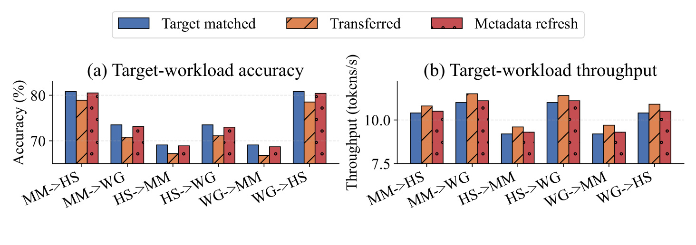
Figure 16 使用 MMLU、HellaSwag 和 WinoGrande 的六个方向测试元数据转移，蓝色为目标任务匹配，橙色为直接转移，红色为目标任务刷新；左图看准确率，右图看吞吐。作者报告直接转移最多降低二点七个百分点，刷新后恢复到距目标匹配零点五个百分点以内，并保持相近吞吐。这里的恢复需要新的目标负载统计，不能说原有配置天然对任何新领域稳健；图中只有三种任务的相互转移，也没有覆盖长期概念漂移或专家权重更新。附录另有分层组合数量比例 14.3%、32.1%、53.6%，Hot 激活占比为 61.8%，与主文约 25%、46%、29%的组合比例不同。由于未说明是否分层汇总、样本量或统计口径变化，不能把两组比例强行视作同一个固定配置。合理的读法是热点确实可能因负载变化，而实际刷新周期、抽样成本和质量门槛要由运行环境重新验证。对推荐服务，这一点意味着内容分布变化或用户活动变化后，应检查元数据失配，而不只观察吞吐是否仍然好看。注意右侧转移吞吐有时相近甚至略高，并不能抵消左侧准确率下降；模型执行更激进时也可能更快。因而上线条件应同时约束质量与成本，用单一速度报警无法识别元数据失效。
补充序列长度实验在百分之二十预算下覆盖一百二十八至两千零四十八 token，作者报告 CRISP 在这些长度上保持优势；这不足以外推极长上下文或多模态输入。图中主要结果没有给出服务级尾延迟、并发排队和在线任务完成率，能耗误差条也不能代替完整系统稳定性实验。全文只报告作者实验，本笔记未运行其训练、内核或独立性能复现。对那些口径不一致的成本数字，保留疑问比按摘要把它们拼成一个看似严密的倍数结论更可靠。
4. 总结
CRISP 最有价值的设计，是让容量控制与执行顺序之间有明确接口。神经元按重要性重排后，同一专家可从一个权重副本暴露不同宽度；组合频率和主辅消融再决定读取多少；调度器利用宽度差异安排传输与计算。各机制的意义可以分别被排序消融、同 I/O 主辅实验和同预算调度实验检查，因此这不是简单叠加三个优化名词。对大模型推理研究，值得学习的是先识别数据搬运瓶颈，再把模型近似和执行引擎共同设计；对推荐系统，可能迁移到稀疏内容理解或场景专家服务，但论文没有证明点击率、转化率或用户体验的线上收益，不能直接挪用系统吞吐作为推荐质量证据。
至少四个限制需要保留。第一，主文算法以双专家组合为核心，DeepSeek 的六专家路由实现细节不充分，复现时需要明确组合表示与宽度分配。第二，Cold 承受更大的条件质量退化，平均准确率难以覆盖罕见但重要任务。第三，校准数据与线上分布相关，重要性、主辅身份、热点都可能漂移，权重更新后还可能需要重新重排。第四，部分数字的口径未统一，包括校准样本量、组合比例以及 Figure 13 的 I/O 归一化，不能用它们给出确定节省率。第五，当前测试集中在两个模型和受限硬件预算，未覆盖模型完全驻留、广泛并发、长时热负载与端到端尾延迟。这些限制影响性能结果能够迁移到哪里，不能靠更高的平均倍数抵消。
后续优先做三组核验。首先，拿到公开代码后检查全宽重排的数值等价性、半宽读取是否实际减少传输、top-6 分配如何实现，并复核缓存和访问量的分母。其次，保持模型、精度、缓存预算、输入长度与并发一致，先复现等 I/O 的对称与非对称实验，再比较顺序、先进先出和宽度感知，分离容量近似与调度增益。最后，用目标业务负载分时校准和回放，记录冷组合、特定任务与尾部请求的质量、延迟和能耗，比较固定元数据、定期刷新和质量触发刷新的成本。若做推荐应用，还需在不改变用户标签与候选集合的条件下验证任务质量，之后才谈在线实验。
我的判断是，这篇论文适合被当作“带质量约束的访存优化方案”阅读。已核验的强证据包括相同预算的质量优势、同等 I/O 的主辅分配对照以及宽度感知相对先进先出的吞吐收益；证据较弱的部分是跨模型实施细节、不同成本归一化与长期稳健性。摘要所说的最高倍数必须附带基线和缓存条件，所谓三点六质量损失也应回到困惑度原始数字。保持这些边界，才能把方法中的接口思想迁移到自己的系统，而不是复制一个脱离负载条件的性能承诺。
对于实际复现，我会优先把 Table 4 与 Figure 14 作为验收锚点。前者可在相同读取预算下确认主辅角色是否真有价值，后者可在固定宽度策略后量化调度额外作用，两者比未明分母的总体 I/O 更容易解释。若这两步都复现不了，先检查校准数据、路由身份、加载字节统计和流同步，而不急于替换更大的模型。若能复现，则再测负载转移与 Cold 切片，确认性能优势没有把任务风险集中到少量请求。这样的顺序让质量、近似与系统成本各自有可追踪证据，也能明确区分算法没有迁移与实现没有达到访存假设这两类失败。